A walkthrough of the grader-facing submission view as it ships on staging (146759be). It covers three roles: a grader with assigned reviews, a grader with nothing assigned, and an instructor. It ends with a proposed scope for one larger PR.
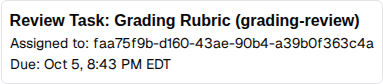
layout.tsx:2175 renders reviewAssignment.assignee_profile_id directly.Replacing the UUID with a name is a one-line change: <PersonName uid=… showAvatar={false} />. That component is already imported in the file and already used by the review toolbar. The one-line fix only fixes the case where the line matters least, though:
useMyReviewAssignments filters to the viewer's own. So the name it shows is always the viewer's own.?review_assignment_id, the param is stripped. Nothing on the page says the submission belongs to Gary (screenshot below).gradername, which is who completed the review (completerprofile.name in the submissions view). It stays blank until the review is done. The dashboard has no column for who is assigned.The fix for all three: load every review assignment on the submission for staff viewers, and render a line like "Assigned to Gary Grader (you) · due Oct 5", "Assigned to Gary Grader · due Oct 5", or "Not assigned". The same source can drive an "Assigned grader" column on the dashboard.
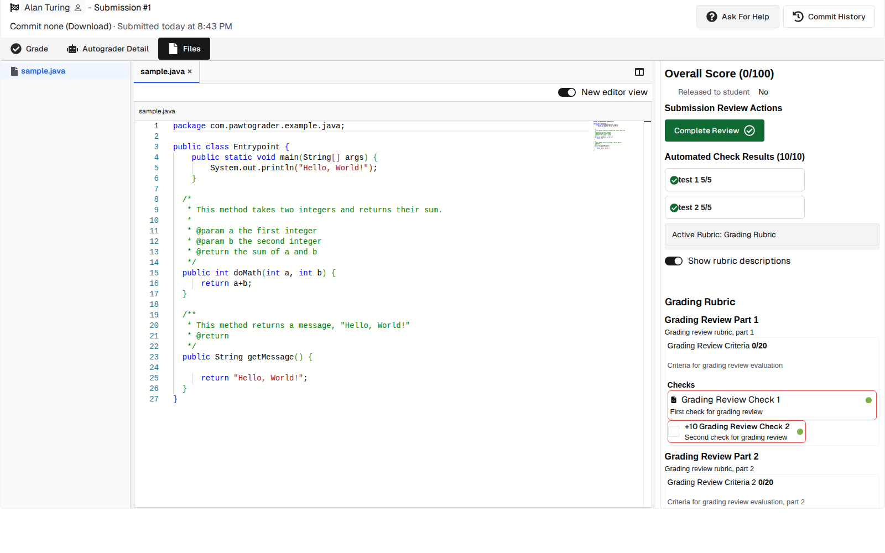
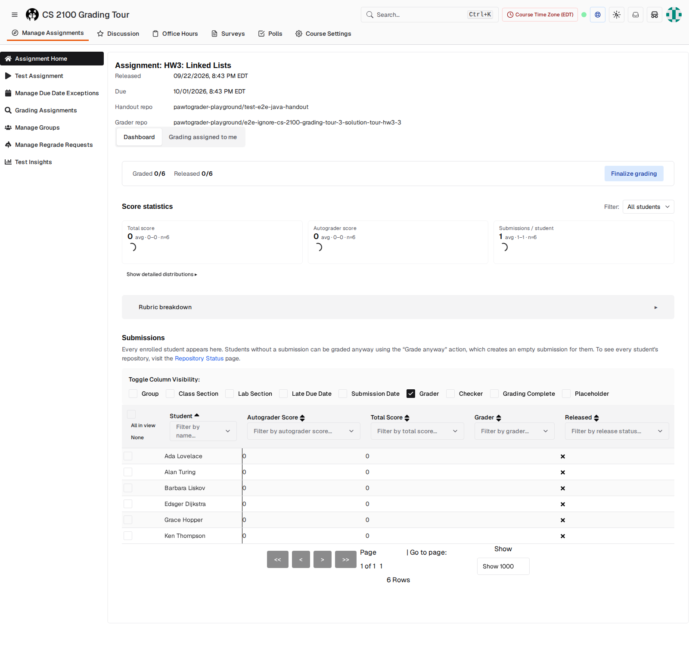
This is the path Gary takes to grade his five assigned submissions. One of them is scoped to a single rubric part.
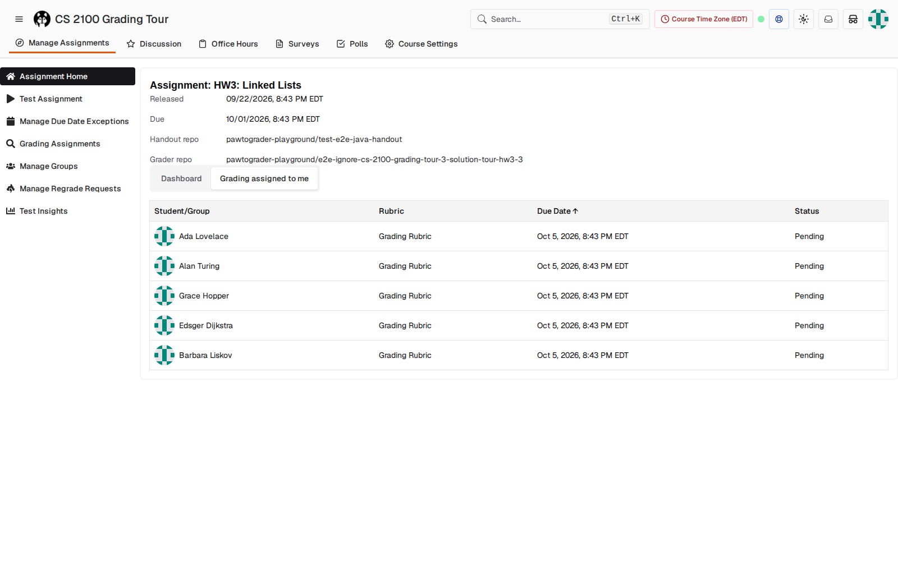
onClick, not a link, so middle-click, open-in-new-tab and keyboard focus don't work. Clicking a row opens the submission root with ?review_assignment_id.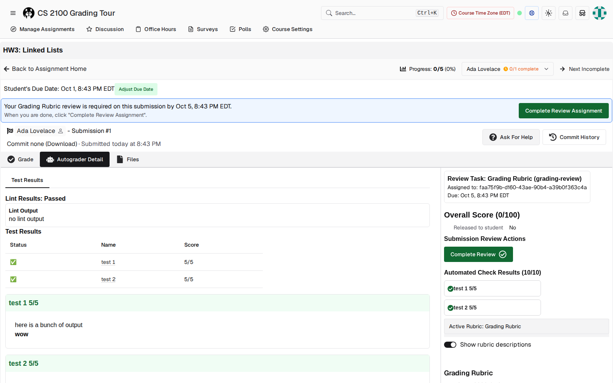
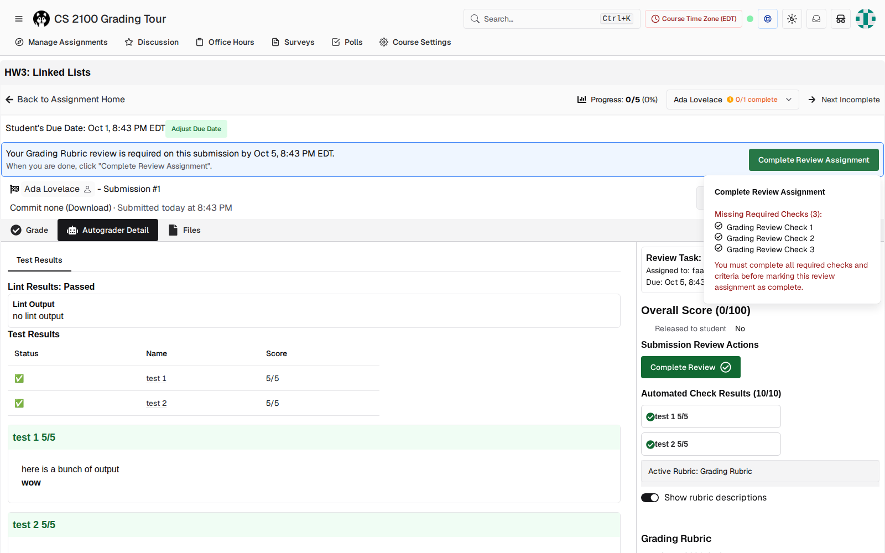
review_assignments.completed_at. "Complete Review" (sidebar) writes submission_reviews.completed_at. Only the sidebar button has "Complete + Next", and the sidebar button is hidden from graders whose assignment is scoped to rubric parts.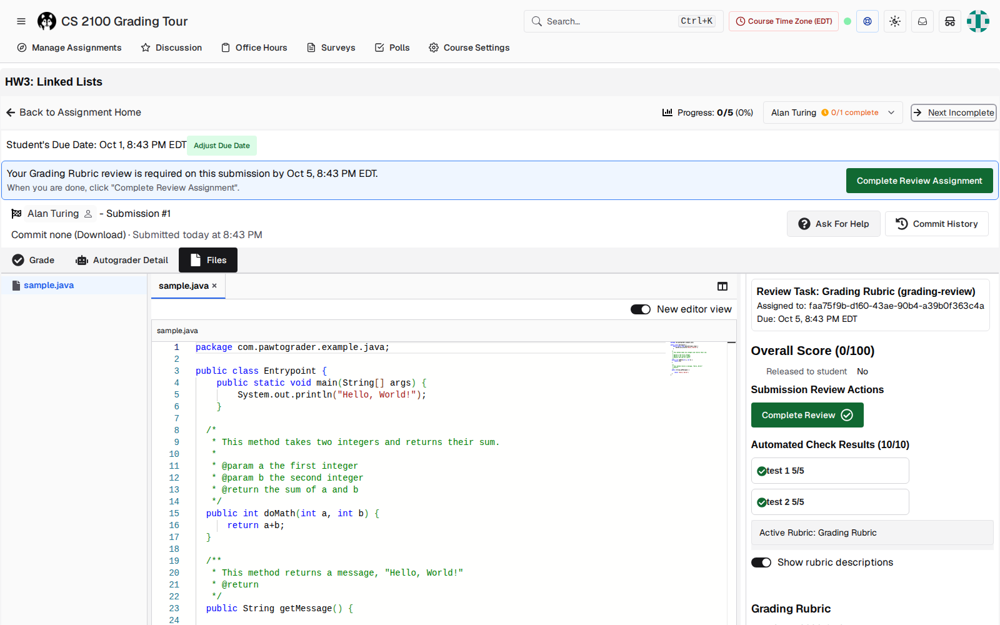
useNextIncompleteReview hard-codes /files, and so do the dropdown and selector in assignment-grading-toolbar.tsx. The order follows submission ID, not the order in the table the grader started from. There is no Previous.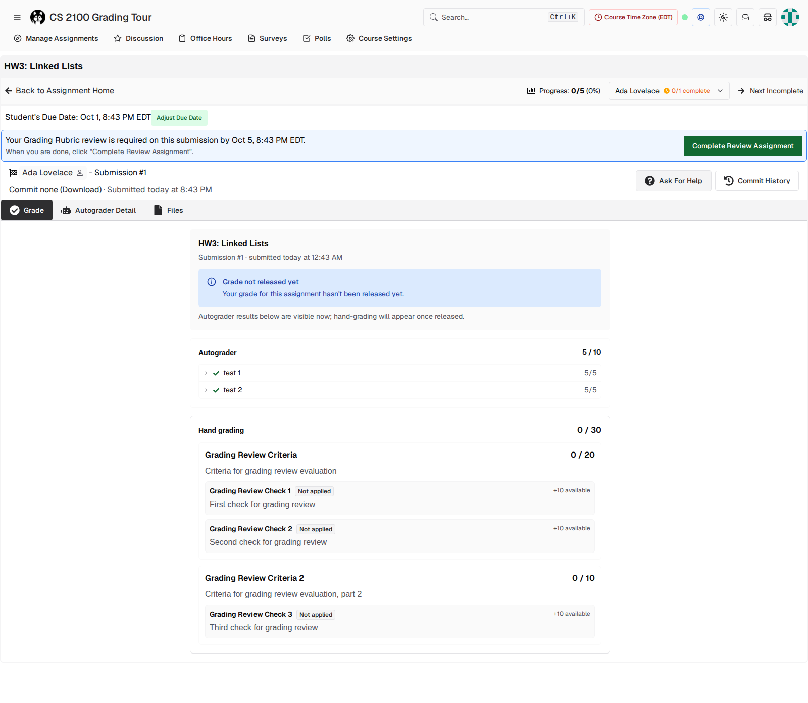
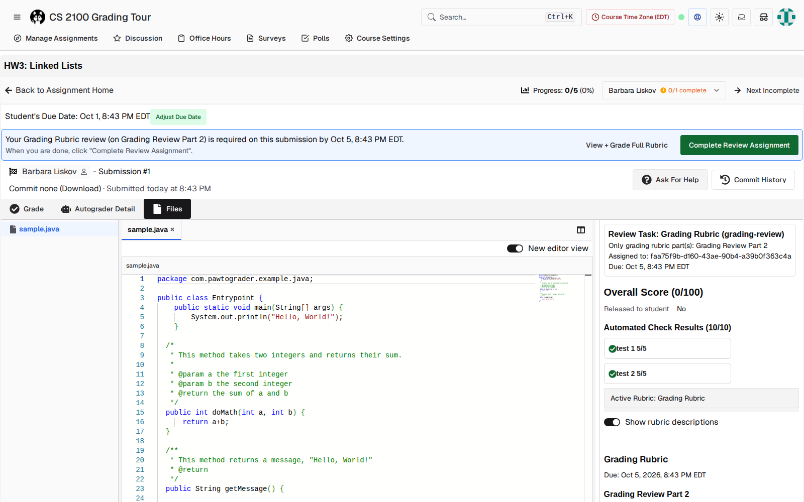
This walkthrough uses a no_submission assignment with a linked survey. The grader's job is to read each student's answers and fill in the rubric.
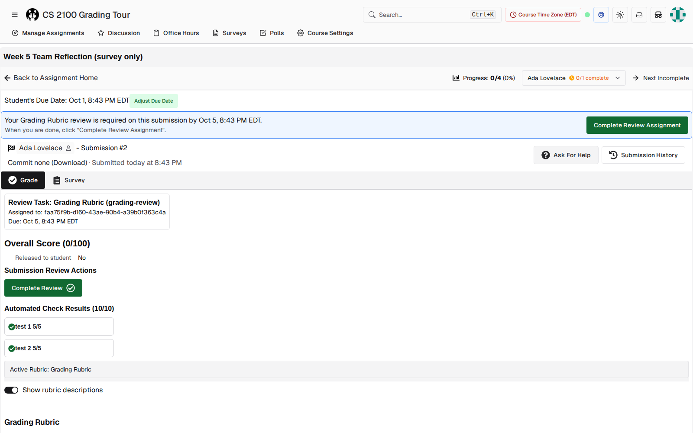
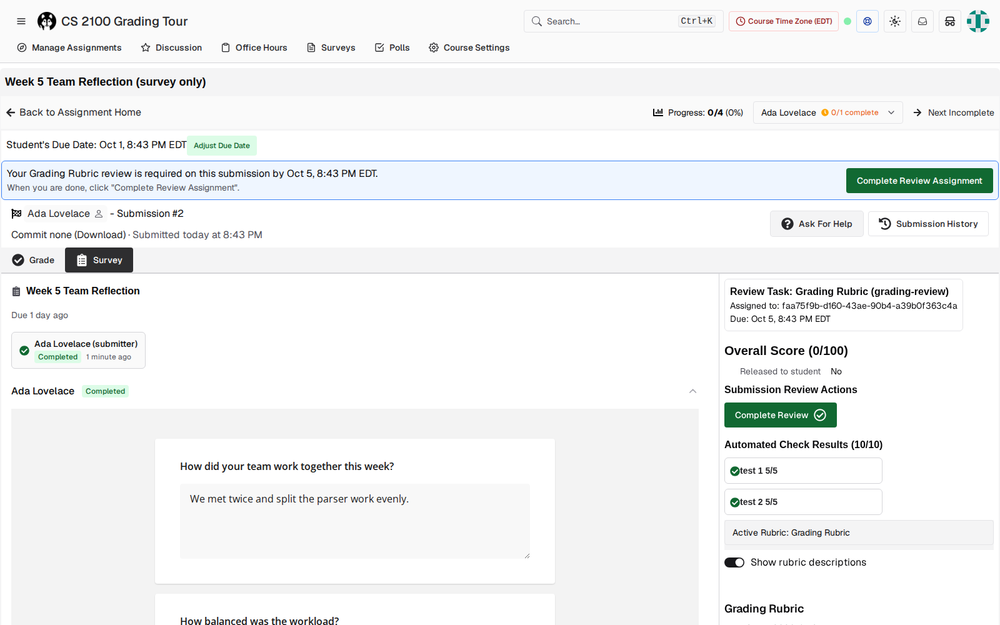
/submissions/32/grade?review_assignment_id=28). With 20 students, that's 20 extra clicks plus the scroll back to the answers.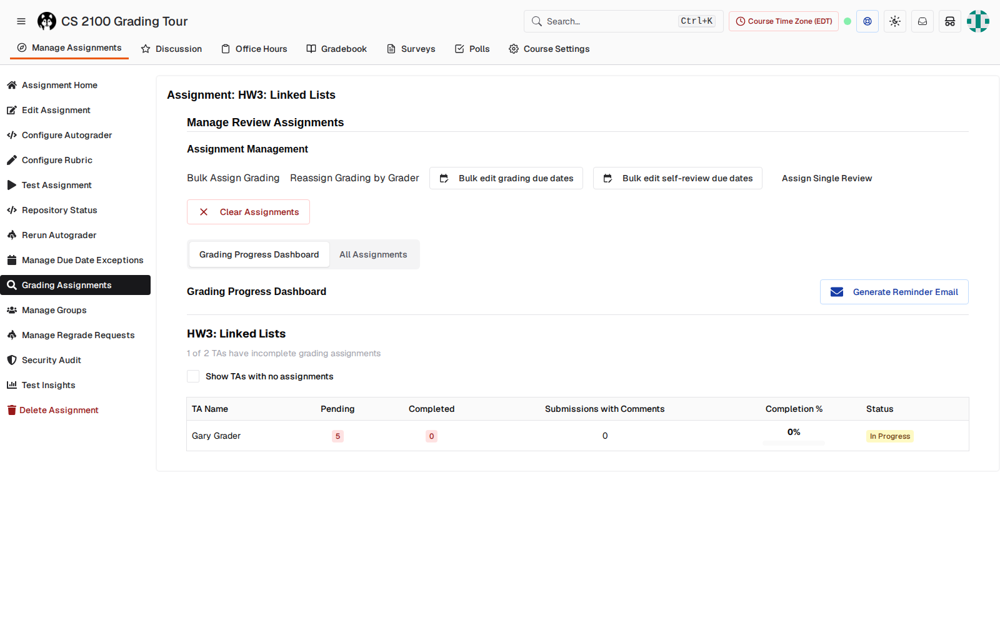
| Severity | Finding | Where |
|---|---|---|
| Bug | Shows "Assigned to: <uuid>". Other staff see no assignee at all. | submissions/[id]/layout.tsx:2175 |
| High | Cross-submission navigation always forces /files and drops the current tab. No tab memory exists. | hooks/useNextIncompleteReview.ts:51, assignment-grading-toolbar.tsx:167,296 |
| High | Survey-linked no_submission assignments default to Grade instead of Survey. | layout.tsx:2283, submissions/[id]/page.tsx:28 |
| High | Two completion buttons write different tables. "Complete + Next" only exists on the sidebar button, which part-scoped graders don't see. "Complete Review Assignment" stays on the page. | submission-review-toolbar.tsx:368–423, 430–619; layout.tsx:1825 |
| High | The rubric starts at the bottom of a 1000px-tall screen, under five blocks of status. | RubricView, layout.tsx:2165–2228 |
| Medium | For staff, "Grade" is the read-only student ledger with student-facing copy. On no-submission assignments, the same label is the editable rubric. | grade/page.tsx, layout.tsx:2624 |
| Medium | "Next" follows submission ID, while the table sorts by due date and the dropdown labels by name. There is no Previous. | useNextIncompleteReview.ts:40–43 |
| Medium | No keyboard shortcuts for next/previous submission, complete, or switching tabs. Today's j/k and n/p only work inside Files. | files/page.tsx:1665–1719 |
| Medium | The dashboard's "Grader" column shows the completer, so assignments are invisible until they're done. | assignmentsTable.tsx:727 |
| Low | The review due date appears 3 times (banner, Review Task box, rubric header). | layout.tsx:2176, toolbar |
| Low | "Assigned to me" rows aren't links (no new tab, no keyboard focus). | reviewAssignmentsTable.tsx:250 |
| Low | An auto-picked review_assignment_id adds a router.replace hop on each load. | useSubmissionReview.tsx:84–147 |
| Low · from code only | The /course/…/grade/… staff route has a footer link to a route that doesn't exist and a Survey tab with no page. I didn't exercise this in the browser. | grade/…/layout-client.tsx:13, layout.tsx:2606 |
This is grouped so the first tier can ship on its own if the PR gets too big. Every item in the first tier removes a per-submission click or fixes wrong information.
no_submission assignments that have a linked survey, both for the first visit and for the canonicalizing redirect.? help already exists)./grade/… route's broken links and Survey tab.review_assignment_id redirect hop.Options are localStorage per (assignment, user), or the URL (carry the current sub-page on every navigation link). The URL is simpler and survives a shared link. localStorage also covers "come back tomorrow". I'd do both: the URL first, localStorage as the fallback.
Per assignment avoids carrying "Survey" onto a code assignment that has no survey tab. A global setting would be wrong on mixed assignment types.
One option is to make "Complete + Next" the primary action and "Complete" secondary. The other is a per-user preference.
The table order (due date, then name), submission ID as today, or a fixed order chosen when grading starts?
Today Grace gets a working "Complete Review" on Gary's submission. Should showing the assignee come with a warning, or with a restriction?
I took the screenshots with a temporary Playwright script against a production build on localhost:3001, with the e2e harness's visual-test masking turned off. The masking replaces the "Assigned to" line with a placeholder, which is why existing visual tests never caught the UUID. The survey-only submissions were seeded with the pre-baked submission helper, so they show autograder checks that a real manual submission wouldn't have. The Grade/Survey tab behaviour doesn't depend on that. Code references point to staging at 146759be.